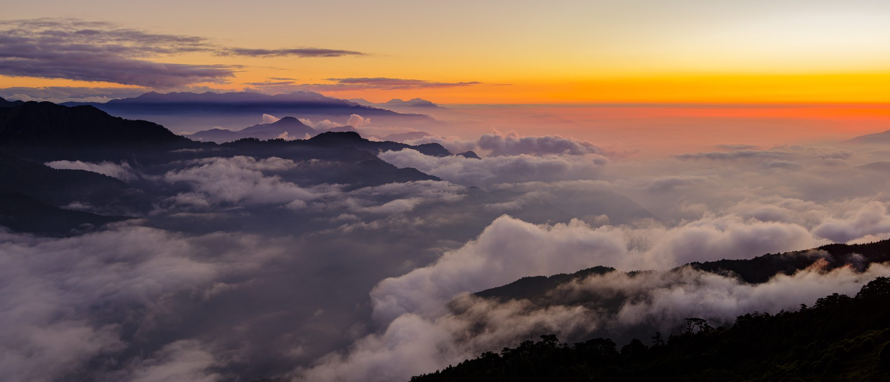

山 · Between mountains and sea
山水 山水 · Sansui · Landscape
山與海之間。霧、雲海、與遠方的稜線。 Between mountains and sea — mist, cloud-seas, and distant ridgelines.
山
山水 · SANSUI · LANDSCAPE · — 枚
以下這些，是行走在山與海之間按下的快門——霧起的湖面、翻湧的雲海，與一層一層淡進天色裡的遠山。點任一張，在山水之間慢慢翻閱。